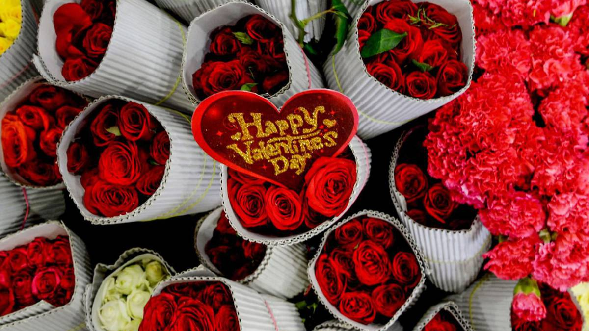

14 de Febrero
Se lleva a cabo cada dia de San Valentin en el que los estudientes disfrutan de un dia con distintos concursos culturales (canto, dibujo, danza, etc.) y con diferentes stands que tienen que ver con la fecha.

Se lleva a cabo cada dia de San Valentin en el que los estudientes disfrutan de un dia con distintos concursos culturales (canto, dibujo, danza, etc.) y con diferentes stands que tienen que ver con la fecha.
Se lleva a cabo el dia del estudiante en el que los estudiantes disfrutan de un dia con diferentes atracciones como el toro mecanico, juegos de habilidad y musica.
Se lleva acabo la celebracion de la independencia de Mexico, en el que la escuela se decora de tricolor y se hacen convivios en cada salon con comidas, se hacen varios concursos y se presentan bailes de los talleres de danza.
Se lleva acabo el dia de los muertos en el que en la escuela se hace por salon un altar rindiendo homenaje a algun difunto, ya sea familiar o algun famoso al que se quiera recordar. Este evento trae algunos concursos como el tradicional concurso de "Las catrinas" o las famosas "Calaveritas Literarias", tambien se hace un concurso que elije al mejor dibujo de la fecha.
Se lleva a cabo la celebracion del dia de la Revolucion Mexicana, en el que algunos de los talleres culturales y deportivos, salen a desfilar en el centro del municipio de Tala.